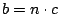

二、平行性與定量平面幾何基礎理論
（第 2 頁）
項武義
．作者任教於香港科技大學數學系
•對外搜尋關鍵字
|
二、平行性與定量平面幾何基礎理論
（第 2 頁）
項武義
|
．作者任教於香港科技大學數學系 •對外搜尋關鍵字 |
|
矩形的面積公式：
「矩形的面積等于長乘寬」，這是一個自古以來就在中外古今所熟知和慣用的公式。在中國的古算中，把它當做「顯然成立者」，並用來作為推導其他定量幾何的公式的起點和基點（詳見下一節）。但是古希臘的幾何學則進一步去追究這個看來相當明顯的面積公式的真正涵意何在，並設法論証之。長話短說，讓我們在此簡明扼要地回顧一下古希臘當年在定量幾何基礎論上的探索歷程： 幾何學是古希臘文明最輝煌的成就，它是以古埃及和古巴比倫文明的幾何知識為基礎，集希臘的精英，歷經好幾世紀世代相承、精益求精的研究創造而成者，乃是人類文明中第一個趨于成熟的科學。古希臘的學者把幾何學的研討作為理解宇宙的基礎學科，所以治學十分嚴謹，高度注重其基本概念的明確性和推理論証上的嚴格性。它不但是其他自然科學的基礎所在，而且也是整個自然科學在思想上、方法論上治學的典範。古希臘幾何學的進程是先研究定性平面幾何，其研討主題是全等形和平行性，然後再進而研討定量平面幾何，而且一開始他們就認識到直線段長度的度量 (measurement of length) 乃是定量幾何研討的起點和基礎所在。通常的做法是先取定（或約定）一個單位長 (unit of length)，它可以是公尺、市尺、英尺，或光在真空走一秒的長度「光秒」，也可以是「光年」，然後把一個給定直線段的長度定義為它和單位長之間的「比值」 (ratio)。由此可見，長度度量這個基本概念的關鍵在于上述「比值」的明確定義。
設給定線段 a 恰好可以等分成 m 段和單位長 u 等長者首尾相接而成，則
a 和 u 之間的比值當然就是 m，而稱這樣的直線段 a 的長度是
m 單位。反之，若單位長 u 恰好可以等分成 n 段和 a
等長者首尾相接而成，則 a 和 u 之間的比值應該等于 大約在紀元之前五世紀前後，古希臘的幾何學學界（例如畢氏及其門人）關于長度度量提出下述概念及論斷：
【可公度性】(Commensurability)：對于兩個直線段 a, b
若存在一個公尺度 (common yardstick) c 恰能同時整量 a,
b，亦即 a, b 都是 c 的整數倍時：, ，則稱
a, b 為可公度 (commensurable)，而 a, b
的長度比值就定義為分數
。另外一個等價的說法就是：若存在適當的整數 m, n 使得 和
然後他們主觀地論斷：任何兩個直線段總是可公度的，亦即可公度性是普遍成立的 (universal validity of commensurability) 。並且以此作為他們當年所致力構築的定量幾何基礎論的「頭號公理」(Principle Axiom)，亦即以「可公度性的普遍成立」為依據、為基石 (foundation)，給定量幾何中的基本定理如矩形面積公式、畢氏定理、相似三角定理給出其証明。大致上，下面所述就是他們當年對于矩形面積公式的証明。
設矩形的長和寬分別是 如 [圖 2-4] 所示， 和 分別可以用平行線分割成 和 個 。
[ 圖 2-4 ]
由此可見
所以 這也就是矩形的面積等于長乘寬的真正涵意。 □ 總之，他們當年基于「可公度性普遍成立」這個「公設」，對于定量平面幾何的重要公式如畢氏定理、相似三角形邊長比例式等等，都給以嚴格的証明，建立起洋洋大觀的定量平面幾何基礎論。其中畢氏學派的貢獻良多，引以自豪。 【歷史的註記】：假如任何兩個直線段真的總是可公度的，則上述証明已經完整無缺地証明了矩形面積公式。但是在畢氏本人百年之後不久，其門徒 Hippasus 卻有一個石破天驚的發現，那就是一個正五邊形的對角線長和其邊長乃是不可公度的！因此當年用來建立定量幾何基礎論的「頭號公設」根本是錯誤的！亦即可公度性並非普遍成立（隨後他也証明了正方形的對角線長和邊長也是不可公度的）。由此可見，上述証明只是証明了矩形兩個邊長 a,b 都是和單位長 u 可公度時這種特殊情形的矩形面積公式，在一般不可公度的情形還得加以補証！ 另一點值得在此一提的是上述証明中很關鍵地用了平行分割，所以矩形面積公式和平行性是必然相關的。當然在三角形內角和恆小于平角的幾何中，任何四邊形的四個內角和恆小于 ，所以根本沒有四個內角均為直角的四邊形。但是「矩形」在那種幾何中其實還是有自然的「推廣」者，那就是兩對對邊各別等長而且其兩條對角線也等長的那種四邊形，它的面積是其兩個邊長的函數，可是其公式要比 複雜得多！ 在討論古希臘的幾何學家如何克服上述不可公度性的問題之前，我們先來看看定量平面幾何學在中國古代是如何建立和處理的。
|
|
|
|
|
（若有指正、疑問……，可以在此 留言 或 寫信 給我們。） |
|
|
|
EpisteMath (c) 2000 中央研究院數學所、台大數學系 各網頁文章內容之著作權為原著作人所有 |
| 最後修改日期：6/19/2004 |